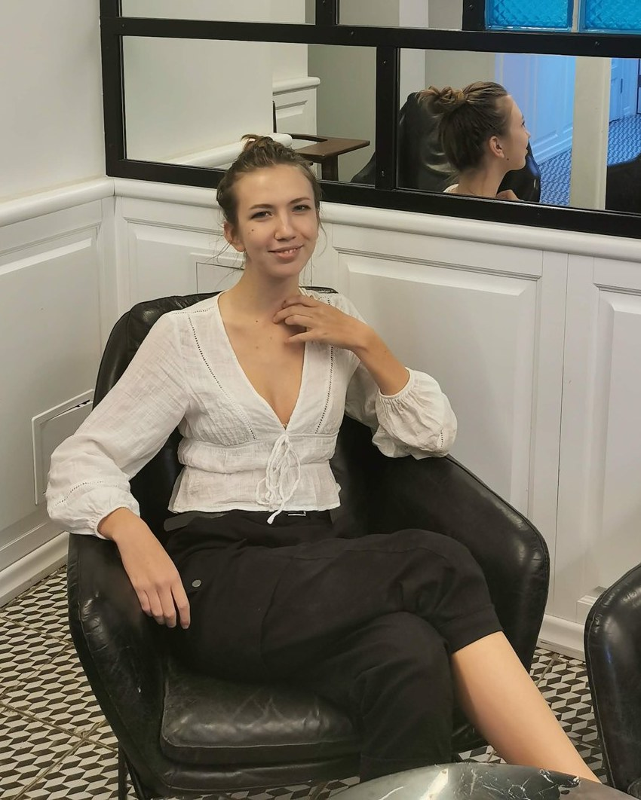
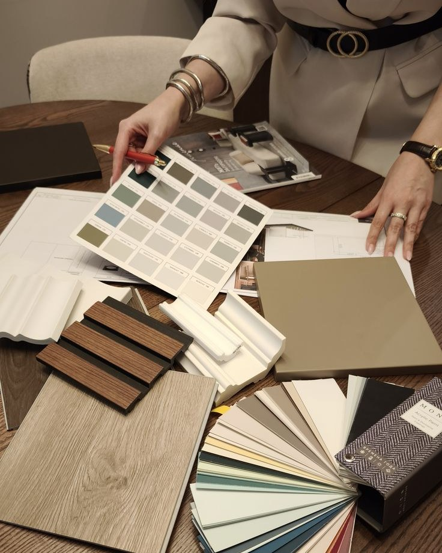
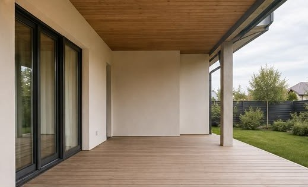
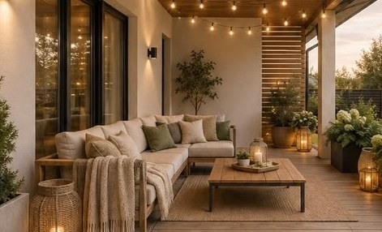

Бюджет — это часть задачи, а не ограничение.
Красивый интерьер за три миллиона придумает любой. Интересно сделать красивый за восемьсот тысяч.

Дизайнер интерьеров, 9 лет практики, 40 реализованных проектов в Москве и области
Делаю интерьеры, в которых можно жить, а не только фотографировать их для журнала.
Я начинаю не с картинок, а с вопросов. Где вы завтракаете, кто первым выходит из дома, что раздражало в прошлой квартире. Планировка вырастает из ответов, а не из модных решений: если семье нужен большой стол, а не остров на кухне — будет стол.
Я не навязываю стиль. У меня нет фирменного почерка, по которому все мои квартиры узнаются, и я считаю это достоинством. Интерьер должен быть похож на хозяев, а не на дизайнера.
Я довожу проект до конца. Чертежи — это половина работы, вторая половина начинается, когда на объект приезжает бригада. Я езжу на замеры, спорю с прорабами и выбираю плитку в салоне вместе с вами.

Цифры
Данные не присланы. Ниже — места под годы и строки: заказчик пришлёт их отдельно, вставка не меняет вёрстку. Биографию мы не сочиняем.
Красивый интерьер за три миллиона придумает любой. Интересно сделать красивый за восемьсот тысяч.
Пустая стена честнее, чем шкаф, купленный лишь бы закрыть пустоту.
Дешёвый ламинат при хорошем сценарии освещения выглядит лучше, чем дорогой паркет под одной люстрой.

